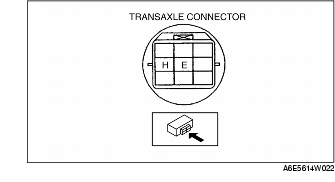
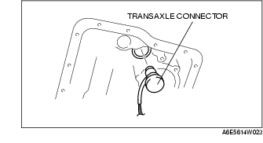
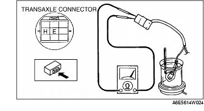

Transaxle fluid temperature (TFT) sensor inspection [FN4A-EL]
On-Vehicle Inspection
1. Disconnect the negative battery cable.
2. Remove the fresh-air duct. (See INTAKE-AIR SYSTEM REMOVAL/INSTALLATION [ZY].)
- • Water or foreign objects entering the connector can cause a poor connection or corrosion. Be sure not to drop water or foreign objects on the connector when disconnecting it.
3. Disconnect the transaxle connector.

4. Measure the resistance between terminals E and H.

- • If there is any malfunction, perform the off-vehicle inspection of TFT sensor. (See TRANSAXLE FLUID TEMPERATURE (TFT) SENSOR REMOVAL/INSTALLATION [FN4A-EL].)
Transaxle fluid temperature (TFT) sensor
5. Install the fresh-air duct. (See INTAKE-AIR SYSTEM REMOVAL/INSTALLATION [ZY].)
6. Connect the negative battery cable.
Off-Vehicle Inspection
- • A hot transaxle and ATF can cause severe burns. Turn off the engine and wait until they are cool before replacing ATF.
1. Remove the control valve body. (See CONTROL VALVE BODY REMOVAL [FN4A-EL].)
2. Remove the transaxle connector.

3. Remove the TFT sensor from the strainer, and connect it to the transaxle connector.
4. Place the TFT sensor and a thermometer in ATF as shown, and heat the ATF gradually.
5. Measure resistance between the terminals of the TFT sensor.

- • If there is any malfunction, replace the TFT sensor. (See TRANSAXLE FLUID TEMPERATURE (TFT) SENSOR REMOVAL/INSTALLATION [FN4A-EL].)
Transaxle fluid temperature (TFT) sensor
6. Disconnect the TFT sensor from the transaxle connector, and install it to the oil strainer.
7. Install the transaxle connector.
8. Install the control valve body. (See CONTROL VALVE BODY INSTALLATION [FN4A-EL].)